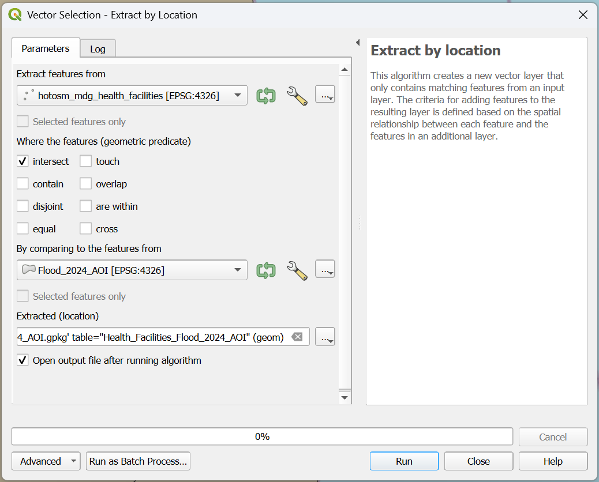
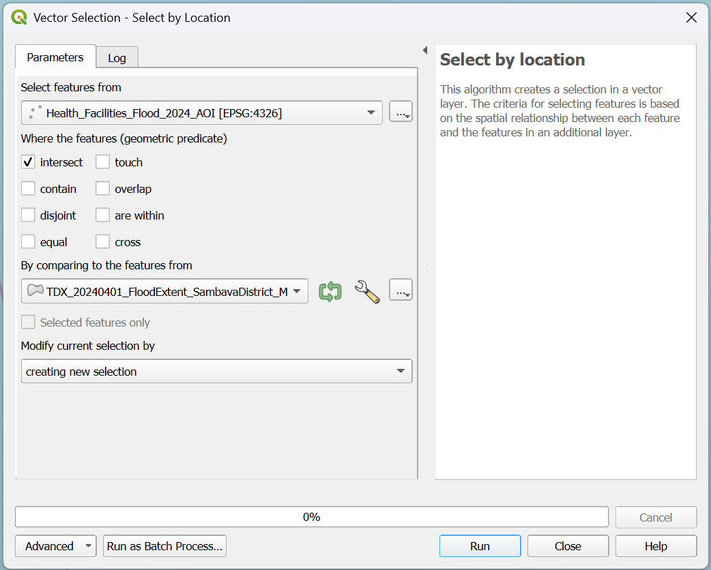
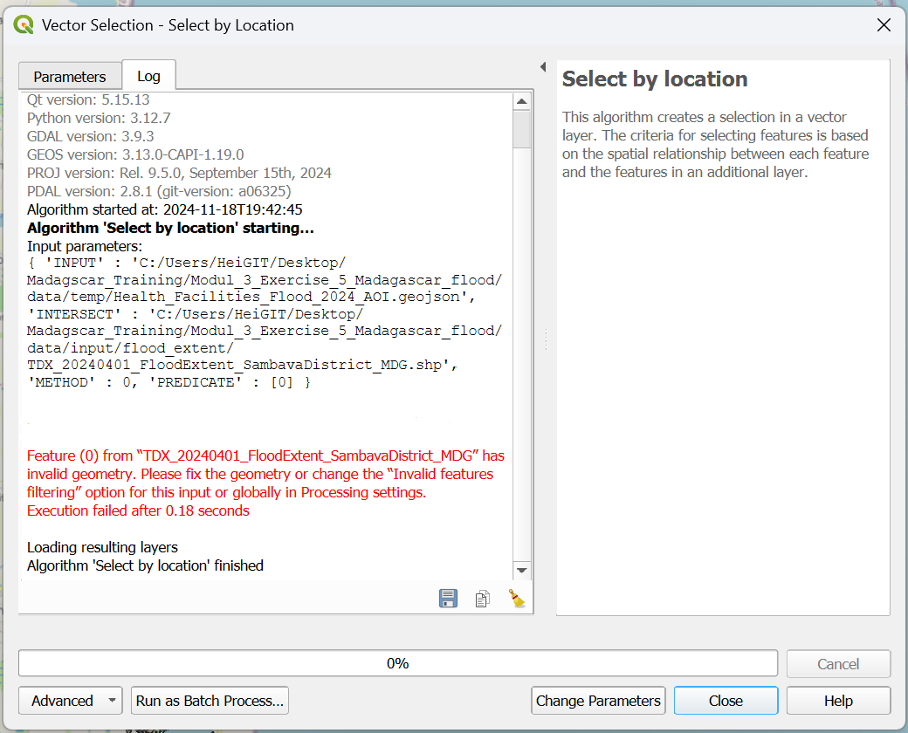
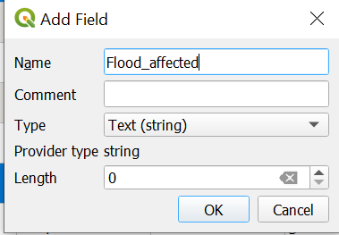
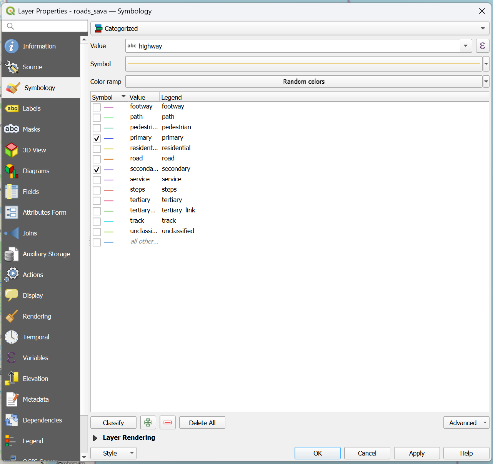
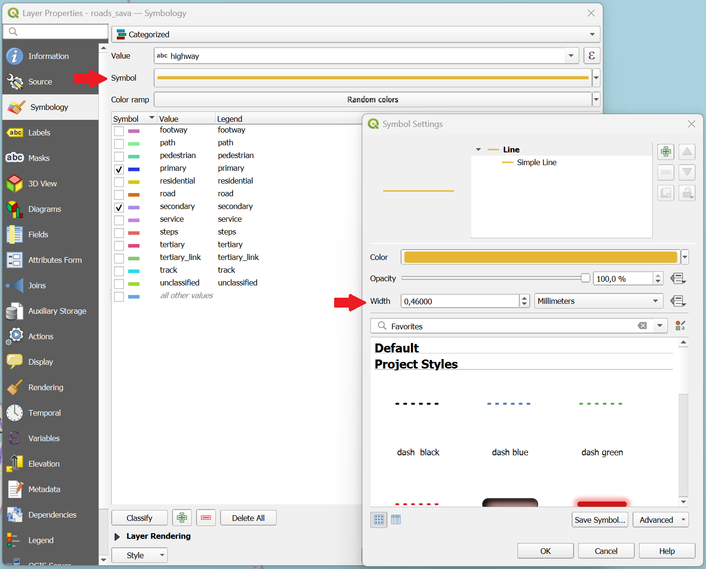
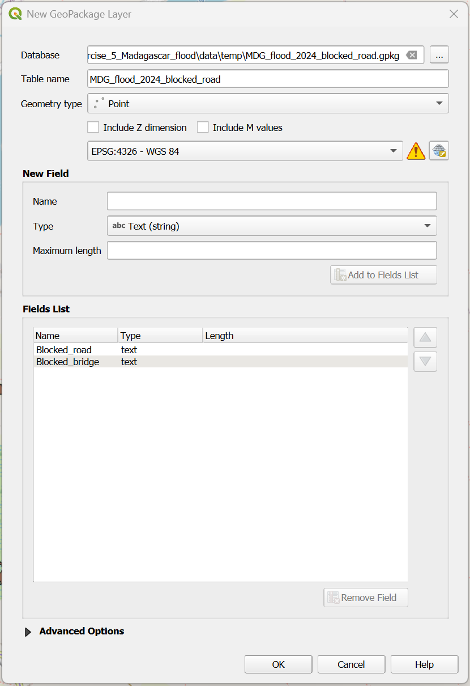
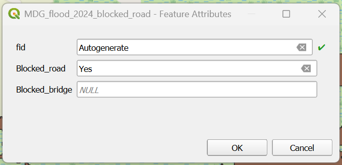
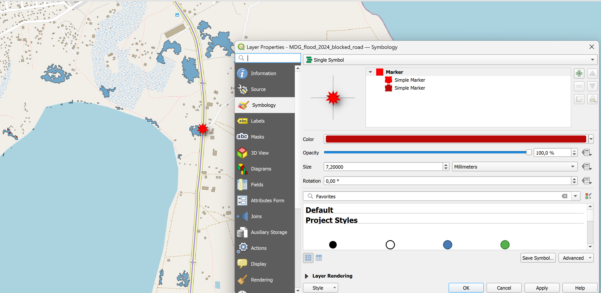

Exercise 6: Sava Flood response#
Aim of the exercise:
Participants will work with multiple layers and conduct spatial queries. Additionally, they will learn how to create their own geodata.
Type of trainings exercise:
This exercise can be used in online and presence training.
These skills are relevant for
QGIS Essentials
Working with multiple layers
Conduct spatial queries
Creation of geodata
Estimated time demand for the exercise:
The exercise takes around 3 hours to complete, depending on the number of participants and their familiarity with computer systems.
Context:
“The Government declared a national emergency situation, on 3 April, following the passage of the Tropical Cyclone (TS) Gamane, that hit the north and northeast of Madagascar on 27 March” Madagascar: Tropical Cyclone Gamane Flash Update No. 2, 4 April 2024 (reliefweb). The following analysis will utilize actual data from this natural disaster. The objective is to pinpoint the specific medical centers and healthcare facilities that were impacted by the flooding. Additionally, we will assess the viability of road access to the populated places.
Instructions for the trainers#
Trainers Corner
Prepare the training
Take the time to familiarise yourself with the exercise and the provided material.
Prepare a white-board. It can be either a physical whiteboard, a flip-chart, or a digital whiteboard (e.g. Miro board) where the participants can add their findings and questions.
Before starting the exercise, make sure everybody has installed QGIS and has downloaded and unzipped the data folder.
Check out How to do trainings? for some general tips on training conduction
Conduct the training
Introduction:
Introduce the idea and aim of the exercise.
Provide the download link and make sure everybody has unzipped the folder before beginning the tasks.
Follow-along:
Show and explain each step yourself at least twice and slow enough so everybody can see what you are doing, and follow along in their own QGIS-project.
Make sure that everybody is following along and doing the steps themselves by periodically asking if anybody needs help or if everybody is still following.
Be open and patient to every question or problem that might come up. Your participants are essentially multitasking by paying attention to your instructions and orienting themselves in their own QGIS-project.
Wrap up:
Leave time for any issues or questions concerning the tasks at the end of the exercise.
Leave some time for open questions.
Available Data#
Download all datasets here and save the folder on your computer and unzip the file.
Dataset name |
Original title |
Publisher |
Download from |
|---|---|---|---|
mdg_admin1.shp |
UN OCHA |
HDX |
|
mdg_admin2.shp |
UN OCHA |
HDX |
|
hotosm_mdg_health_facilities.gpkg |
Humanitarian OpenStreetMap Team (HOT) |
HDX |
|
TDX_20240401_FloodExtent_SambavaDistrict_MDG.shp |
UNOSAT |
HDX |
|
roads_sava.gpkg |
Roads Sava |
Humanitarian OpenStreetMap Team |
HOT Export Tool |
Hint
Folder structure
To keep your data organized and easily accessible, it’s important to establish a clear folder structure on your computer for your QGIS projects and geodata. Ensure that your exercise data are saved in a location that allows for easy retrieval and association with the corresponding QGIS project.
Task 1: Gain an overview of the situation around Sambava and Vehomar#
Context:
You have been deployed as an information manager to the flood-affected regions of Madagascar. Upon your arrival you received reports from the operations team indicating that the distrcits Sambava and Vohemar of the region Sava are affected by the floods. The team needs a general overview of the affected locations.
Open QGIS and create a new project by clicking on
Project->NewOnce the project is created save the project in the “project” folder of the exercise “Modul3_Exercise_2_Flood_Larkana”. To do that click on
Project->Save asand navigate to the folder. Name the project “MDG_Sava_flood_2024”.First, we want to add the OpenStreetMap as a base map for orientation. To add the OSM as a base map click on
Layer->Add Layer->Add XYZ Layer…. ChooseOpenStreetMapand clickAdd.
Tip
You cannot interact with a base map!
Next, load the GeoPackage “mdg_admin2.gpkg” in your project by drag and drop (Wiki Video). Or click on
Layer->Add Layer->Add Vector Layer. Click on the three points and navigate to “mdg_admin2.gpkg”. Select the file and click
and navigate to “mdg_admin2.gpkg”. Select the file and click Open. Back in QGIS clickAdd(Wiki Video).
Attention
GeoPackage files can contain multiple files and even entire QGIS projects. When you load such a file in QGIS a window will appear in which you have to select the files you want to load in your QGIS project.
First, we want to export the district Sambava and the neighbouring district Vohemar from mdg_admin2 to have it as a stand-alone vector layer. To do that:
Open the attribute table of mdg_admin2 by right click on the layer ->
Open Attribute Table(Wiki Video).Find the row of Sambava in the column ADM2_EN and mark it by clicking on the number on the very left-hand side of the attribute table. The row will appear blue and the area of Sambava will turn yellow on the map canvas. You can right-click on the row and click
Zoom to Feature(Wiki Video). To select the Vohemar district, click on theSelect Feature(s)icon in the QGIS Toolbar, hold theShiftbutton on your keyboard, and click on the districts either on the map or the attribute table (Wiki Video).After you are done selecting districts, click on the icon
 to end the feature selection mode.
to end the feature selection mode.Now right-click on the layer in the Layer Panel and click on
Export->Save Selected Features as. We want to save the selected districts as a GeoPackage, so choose theFormatoption accordingly. Click on the three points and navigate to yourtempfolder. Here you can give it the layer the name “Flood_2024_AOI” and clickSave. Now you should see the same name in theLayer namefield. Clickok(Wiki Video)Click on the icon
 in the toolbar to end the feature selection.
in the toolbar to end the feature selection.
Achievement:
Now you have an overview of where the districts Sambava and Vohemar in Sava are located. The operations team can use this information.
Tip
Do not forget to save your project from time to time!
Task 2: Estimation of Flood Impact on the Health Sector in Sambava and Vohemar#
{kind=link}
The first thing to do is to find out where the health facilities are located in the area. To do that, you do a quick search on HDX. You find the dataset Madagascar Health Facilities (OpenStreetMap Export). This will do for now.
Load the GeoPackage “hotosm_mdg_health_facilities.gpkg” in your project by drag and drop (Wiki Video). Or click on
Layer->Add Layer->Add Vector Layer. Click on the three points and navigate to “mdg_admin2.gpkg”. Select the file and click Open. Back in QGIS clickAdd(Wiki Video).First, we must extract the health facilities in our area of interest. We will use the tool “Extract by Location” to do that.
Open the
Processing Toolbox(here is how) and search for the tool.As
Input Layerwe will use “hotosm_mdg_health_facilities”.For
By comparing to the features fromwe use the layer “Flood_2024_AOI”.As
Geometric predicatewe useintersect.To save the output click on the three points at
Extract (location)->Save to GeoPackageand navigate to yourtempfolder. Save the new layer under the name “Health_Facilities_Flood_2024_AOI”. Give the new layer the sameLayer nameand clickRun.
Open the Attribute table of the new layer and have a look.
{kind=link}

Extract by location.#
Ok, now we have a good overview of the location of health facilities. We need much better information about the flooded area to identify the health facilities impacted by the flood. Fortunately, the UN has just shared a dataset about the extent of floods. Satellite detected water extent over Sambava and Vohemar Districts, Sava Region, Madagascar as of 01 April 2024 .
Load the dataset “TDX_20240401_FloodExtent_SambavaDistrict_MDG.shp” into your QGIS.
Adjust the opacity of the flood layer by right-clicking on layer “TDX_20240401_FloodExtent_SambavaDistrict_MDG” in the Layer Panel and click on
Properties. A new window will open up with a vertical tab section on the left. Navigate to theSymbologytab. Adjusted the opacity to around 60 % by moving the slider.
We have observed that certain health facilities are located within the flooded area. In order to visualise this information on the map, we plan to include a new attribute called “affected” in the attribute table of “Health_Facilities_Flood_2024_AOI”. To accomplish this, our first step will involve selecting all the affected health facilities. A new column containing this information is then appended to the “Health_Facilities_Flood_2024_AOI” attribute table.
Open the
Processing Toolbox(here is how) and search for the tool “Select by Location”.Select features from= “Health_Facilities_Flood_2024_AOI”.As
Geometric predicatewe useintersect.For
By comparing to the features fromwe use the layer “TDX_20240401_FloodExtent_SambavaDistrict_MDG”.Modify current selection by=creating new selection.Click
Run.
Please note: Based on the original data, no actual health facilities were affected by the flood, but for the purposes of learning QGIS, we have placed three dummy health facilities within the flooded areas.
{kind=link}

Select flood affected health facilities#
Warning
In case you encounter the error:
Feature (1) from “TDX_20240401_FloodExtent_SambavaDistrict_MDG” has invalid geometry. Please fix the geometry or change the Processing setting to the “Ignore invalid input features” option. Execution failed after 0.07 seconds
You need to first use the tool “Fix Geometry” before repeating the previously failed step 5 of using the tool “Select by Location”.
To do so open the
Processing Toolbox(here is how) and search for the tool “Fix Geometries”.Input layer=TDX_20240401_FloodExtent_SambavaDistrict_MDGSave the new file in your
tempfolder by clicking on the three dots, specify the file name as “TDX_20240401_FloodExtent_SambavaDistrict_MDG_fix”.Click
Run.
{kind=link}

Fix Geometry#
Open the attribute table of “Health_Facilities_Flood_2024_AOI” by right click on the layer ->
Open Attribute Table(Wiki Video) and activate the editing mode by clicking on (Wiki Video). Now you are able to edit the data directly in the table.
(Wiki Video). Now you are able to edit the data directly in the table.First, we add a new column with the name “Flood_affected”. To do so, click on
 . In the
. In the Add fieldwindow, you have to add the name and set theTypetoText(string). ClickOK(Wiki Video)
{kind=link}

Add new column#
Now look for the
Show all Featuresoption in the lower left corner and click on it. Then, select the optionShow selected features(Wiki Video). This will filter the table to display only the rows that represent the health facilities directly impacted by the flood. Fortunately, no health facilities are directly affected by the flood.If any were affected: Write
Yesin the “Flood_affected” column.
When you are done, click
 to save your edits and switch off the editing mode by again clicking on (Wiki Video).
to save your edits and switch off the editing mode by again clicking on (Wiki Video).Click on the icon
in the toolbar to end the feature selection.To visualise the enriched data set, we use the function “Categorized Classification” function. This means that we select a column from the attribute table and use the content as categories to sort and display the data (Wiki Video).
Right-click on the layer “Health_Facilities_Flood_2024_AOI” in the Layer Panel and click on
Properties. A new window will open up with a vertical tab section on the left. Navigate to theSymbologytab.On the top you find a dropdown menu. Open it and choose
Categorized. UnderValueselect “Flood_affected”.Further down the window, click on
Classify. Now you should see all unique values or attributes of the selected “Flood_affected” column. You can adjust the colours by double-clicking on each colour in the central field. Once you are done, clickApplyandOKto close the symbology window.

Flood affected health facilities classification#
Achievement: We’ve pinpointed that 3 health facilities have been inundated by the floods.
Task 3: Logistical access#
{kind=link}
Context:
The operations team is making plans to deliver much-needed supplies to the affected regions in Sambava and Vohemar. Currently, there is uncertainty about how the supplies can be transported there. The operations team has asked for more information on this topic. They need answers to the following three questions:
Which roads leading into the affected regions are blocked, and at what specific locations are they blocked?
If transporting supplies by road into the region is not feasible, what alternative method could be used to deliver the supplies?
In order to get a clearer picture, we need to import the road network data for the region into QGIS. Look for the file in the input folder. The road network is initially displayed without showing any road types or other relevant details. We should apply a categorized classification technique only to display the specific roads that we are interested in.
Load the dataset “roads_sava.gpkg” from your input folder into your QGIS.
For categorized classification right-click on the layer “roads_sava” in the Layer Panel and click on
Properties. A new window will open up with a vertical tab section on the left. Navigate to theSymbologytab (Wiki Video).On the top you find a dropdown menu. Open it and choose
Categorized. UnderValueselect “highway”.Further down the window, click on
Classify. Now you should see all unique values or attributes of the selected “Flood_affacted” column. You can adjust the colours by double-clicking on the coluors in each row in the central field.Remove the tick from all categories except:
motorway,primary,secondary,trunk

Road classification#
You have the option to customize the width of the main roads’ lines to improve the visualization. Open the Symbology window, then select
Symbol. In the new window, you can adjust the width of the lines to your preference.

Road classification#
Once you are done, click
ApplyandOKto close the symbology window.
To simplify the process, we will visually search for blocked roads and mark them with points. For this purpose, we will create an entirely new point dataset representing blocked roads.
Click on
Layer–>Create Layer->New GeoPackage Layer(Wiki Video)
Under
Databaseclick on and navigate to tempfolder. Give the new dataset the name “MDG_flood_2024_blocked_road”. ClickSave.Geometry type: SelectPointUnder
Additional dimensionyou should always make sure that you check none of them..Select the coordinate reference system (CRS) “EPSG:4326-WGS 84”. By default, QGIS selects the project CRS.
Under
New Fieldyou can add columns to the new layer. Add the column “Blocked_road”.Name= “Blocked_road”Type: SelectText (string)Click on
Add to Fields List to add the new column to the Fields List.Create another field with the
name“Blocked_bridge” and theType: SelectText (string).Click
OK.
Your new layer will appear in the
Layer Panel

New layer with the blocked roads.#
Now you can create a point for each place where the flood layer covers the main roads leading through AOI wiki. Currently the new layer “MDG_flood_2024_blocked_road” is empty. To add features we can use the
Digitizing Toolbar. If you cannot see the toolbar, click on the tabView->Toolbarsand checkDigitizing Toolbar(Wiki Video).
Activate the editing mode by clicking on
. Activate then the option to add new points by clicking on  .
.Look out for places where the flood layer covers the main roads or bridges. Once you have found one, left-click on the location you want to digitise.
Once you click on a place, a window will appear. Indicate that the road is blocked by writing
Yesin the fieldBlocked_road.Repeat this step with all the locations your can find.

Digitising blocked roads#
Once you are done with digitizing click on
to save your edits.Click again on
to end the editing mode.
Now, we have mapped all roads in our AOI that are blocked by the flood. We can use icons instead of just points to display the layer “MDG_flood_2024_blocked_road” to visualise this fact better wiki.
Right-click on the layer “MDG_flood_2024_blocked_road” in the Layer Panel and click on
Properties. A new window will open up with a vertical tab section on the left. Navigate to theSymbologytab.Keep the
Single Symboloption. Select any symbol from the list that is appropriate for marking blocked roads (make sure the filter is set toFavouritesorAll Symbols).Once you are done, click
ApplyandOKto close the symbology window.After you are done, click on the icon
to end the feature selection mode.

Visualising blocked roads with icons#
{kind=link}
{kind=link}
{kind=link}
{kind=link}
{kind=link}
The operations team has now all the information they need to plan their logistics. Good Job!